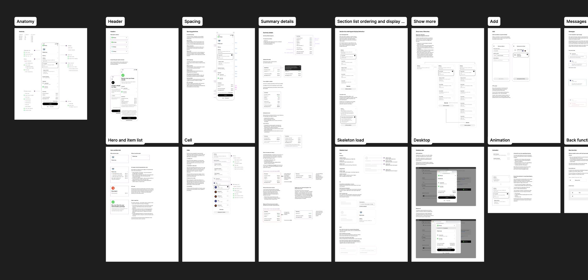
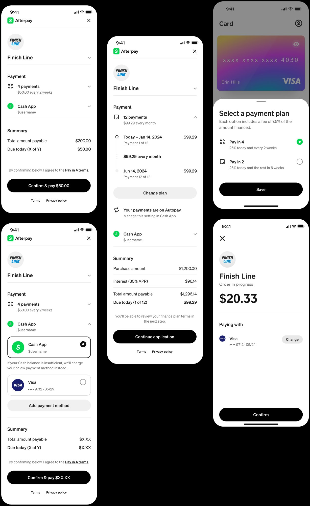

A complete overhaul of Afterpay's checkout. the most critical moment in the purchase flow, handling 15M+ sessions every month across six global markets.
Afterpay's checkout had grown organically across years and markets. By the time I inherited it, the UI was cluttered with a legacy profile section that wasted space, payment information that lacked visual priority, and multiple competing legal disclaimers that buried the confirm action. Customers were confused at exactly the moment they needed to feel confident.
At the same time, the business was accelerating fast: new payment plans, new markets, new payment methods. The existing design couldn't scale without breaking. Every new feature required fragile one-off solutions.
Before and after: from cluttered legacy UI to a clear, modular checkout
What I did
1
Diagnosed the problem through dataReviewed session recordings, drop-off data and support ticket themes to identify where and why customers were losing confidence or abandoning. The profile section, payment schedule clarity and error states stood out as consistent friction points.
2
Defined a new information architectureRestructured the page around three clear jobs: understand the merchant context, choose your payment method, and confirm. Removing the legacy profile section immediately freed up visual space and reduced cognitive load.
3
Built a modular component systemDesigned expandable sections for payment plan selection, payment method and order summary. each able to flex independently. This allowed the checkout to support Afterpay's four payment plans and multiple card types without requiring a redesign for each combination.
4
Overhauled error handling and trust signalsRewrote all error states with plain, specific language (no generic "something went wrong") and clear recovery actions. Consolidated three separate legal disclaimer sections into a single, well-placed line at the point of confirmation.
5
Validated across markets and edge casesRan usability testing in AU, US and UK. Worked closely with risk and compliance teams to ensure every legal requirement was met without cluttering the UI. Documented hundreds of states, edge cases and component variants for engineering.

Key design decisions
Merchant branding at the top. Replacing the generic profile section with the merchant's logo immediately oriented customers: they knew where they were and who they were buying from. This single change visually anchored the whole flow.
Receipt-style summary near the CTA. Moving the order summary directly above the confirm button kept the key numbers (total and amount due today) visible at the moment of decision, reducing confusion and the need to scroll.
Modular sectioning for flexibility. Each section expands independently, which made it possible to introduce new payment plans and methods without a full redesign. a critical requirement for a product iterating this fast across markets.

The redesigned checkout across different payment plans, methods and market configurations
"At the point of purchase, clarity is the product. Every element either builds confidence or erodes it."
Outcomes
15M+Sessions per month handled by the redesigned flow
6Global markets supported without market-specific redesigns
4Payment plans supported within the same modular layout